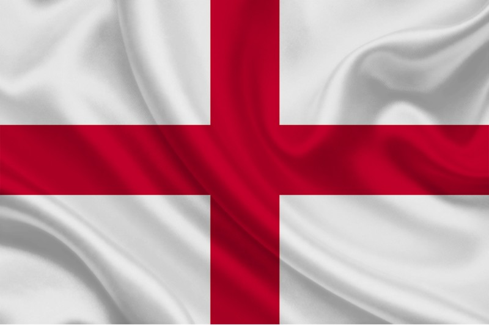

ORIGEM DO FUTEBOL
QUANDO E ONDE COMEÇOU?
Quase todas as culturas do mundo possuem alguma referência ao futebol. Chineses, japoneses, italianos, gregos antigos, persas, vikings e muitos outros povos já jogavam algum tipo de jogo de bola em tempos muitos distantes. Os chineses, por exemplo, já tinham um jogo parecido há 3.000 anos atrás. Na Grécia antiga e em Roma, os jogos de bola era utilizados para preparar soldados para a guerra. Já na América do Sul e na América Central existiu um jogo chamado "Tlatchi" semelhante ao futebol.
Porém, foi na Inglaterra que o futebol realmente começou a tomar forma. Tudo começou em 1863, quando duas associações de jogos de bola (futebol association e futebol tipo rugby) se separaram, porque os partidários do "rugby" não aceitavam um jogo em que era proibido segurar a bola com as mãos. E isso acabou dando origem à The English Football Association, primeira associação inglesa de futebol.Apenas 8 anos depois, a EFA já contava com 50 clubes membros. A primeira competição mundial (a FA Cup) aconteceu no mesmo ano. Antes de se ouvir sobre o futebol na Europa, já aconteciam partidas internacionais na Grã-Bretanha. A primeira delas foi em 1872, entre Inglaterra e Escócia.
Depois da Associação Inglesa de Futebol, vieram: a associação escocesa (1873), a associação de Gales (1875) e a irlandesa (1880). Devido à influência britânica na época, o futebol começou a se espalhar por outros países. As seguintes associações (não britânicas) foram: Holanda e Dinamarca (1889), Nova Zelândia (1891), Argentina (1893), Chile (1895), Suíça e Bélgica (1895), Itália (1898), Alemanha e Uruguai (1900), Hungria (1901) e Finlândia (1907). Quando a FIFA foi fundada em Paris, em maio de 1904, havia sete países membros: França, Bélgica, Dinamarca, Holanda, Espanha (representada pelo Madri FC), Suécia e Suíça. A Confederação Brasileira de Futebol surgiu em 1919.
PRIMEIROS TIMES
Um dos primeiros times foi o Notts County Football Club é um dos clubes de futebol mais antigos do mundo, fundado em 1862. Localizado em Midlands, no Reino Unido, o clube teve poucas conquistas em sua história, com destaque para dois terceiros lugares na Primeira Divisão em 1891 e 1901, e uma vitória na Copa FA em 1894. Atualmente, o Notts County disputa a National League, a quinta divisão do futebol inglês, e busca a promoção para a League Two.

O Hallam FC é outro time bem antigo joga no campo de futebol mais antigo do mundo. Eles conquistaram o primeiro troféu de futebol de todos os tempos, em 1867, a Youdan Cup (Copa Youdan) e disputam, inclusive, o derby mais antigo do futebol contra o Sheffield FC. A Youdan Cup está presente no Hallam FC até os dias de hoje e ainda, e o clube disputada partidas constantemente contra o lendário rival, o Sheffield FC.